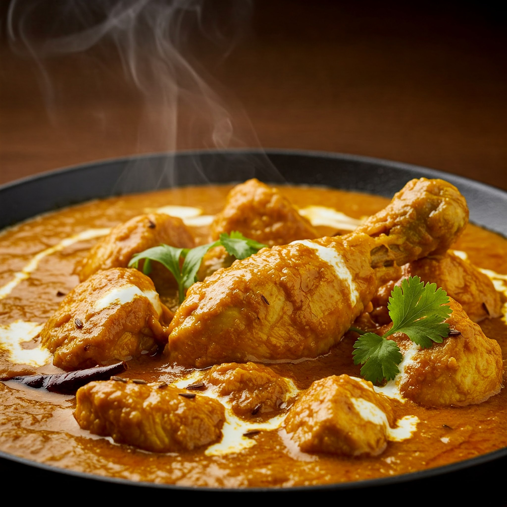

Wet fry chicken with chapati's
Ingredients
-For the Wet-Fry Chicken:
- Chicken: About 1 kg, cut into pieces.
- Onions: 2-3 large, finely chopped.
- Tomatoes: 3-4 ripe, chopped or blended.
- Garlic and Ginger Paste: 1-2 tablespoons.
- Green Bell Peppers: 1-2, sliced (optional).
- Fresh Coriander (Cilantro): For garnish.
- Chilies: Optional, for spice.
- Cooking Oil: 2-3 tablespoons.
- Salt: To taste.
- Spices: Curry powder, Paprika, Turmeric, Black pepper and Mixed spices or chicken masala.(adjust to preference):
- Water: About 1 cup for the sauce.
-For Chapati:
- All-Purpose Flour: About 3 cups.
- Salt: 1 teaspoon.
- Cooking Oil: 3 tablespoons (plus extra for cooking).
- Warm Water: For kneading.
With these ingredients, you're ready to create a hearty and delicious meal!
instructions
-Here’s how you can prepare a delicious wet-fry chicken with chapati meal:
-Wet-Fry Chicken:
- Prepare the Chicken: Clean and cut the chicken into pieces. Pat it dry.
- Cook the Chicken: In a pot, add the chicken and some salt. Cover and let it cook on medium heat until it releases its own water. Cook until the water evaporates and the chicken is tender. Set it aside.
- Sauté Onions: In a pan, heat 2-3 tablespoons of oil. Add the chopped onions and fry until golden brown.
- Add Garlic and Ginger: Stir in the garlic and ginger paste and cook for about a minute until fragrant.
- Add Spices: Sprinkle your preferred spices (curry powder, turmeric, paprika, black pepper, or chicken masala) and stir well.
- Tomatoes and Peppers: Add the chopped or blended tomatoes, stir, and let them cook until they form a thick paste. You can also add green bell peppers at this stage for extra flavor.
- Combine Chicken: Add the pre-cooked chicken pieces to the pan and mix well. Allow it to simmer for about 5 minutes.
- Add Water: Pour in about 1 cup of water to create a saucy consistency. Stir well and let it simmer until the sauce thickens and coats the chicken.
- Finish and Garnish: Taste and adjust the seasoning. Sprinkle freshly chopped coriander for garnish.

-Chapati:
Make the Dough:
- In a bowl, mix 3 cups of all-purpose flour with 1 teaspoon of salt.
- Add 3 tablespoons of cooking oil and mix well.
- Gradually add warm water while kneading until you get a soft, elastic dough.
- Rest the Dough: Cover the dough with a clean cloth and let it rest for about 20-30 minutes.
- Roll the Chapati: Divide the dough into equal-sized balls. Roll each ball into a thin, round flatbread using a rolling pin.
- Cook the Chapati: Heat a pan or skillet. Cook each chapati on medium heat for about 1-2 minutes per side, brushing lightly with oil as it cooks. Flip until both sides are golden and soft.
- Serve Warm: Stack the chapatis and keep them covered in a clean cloth.